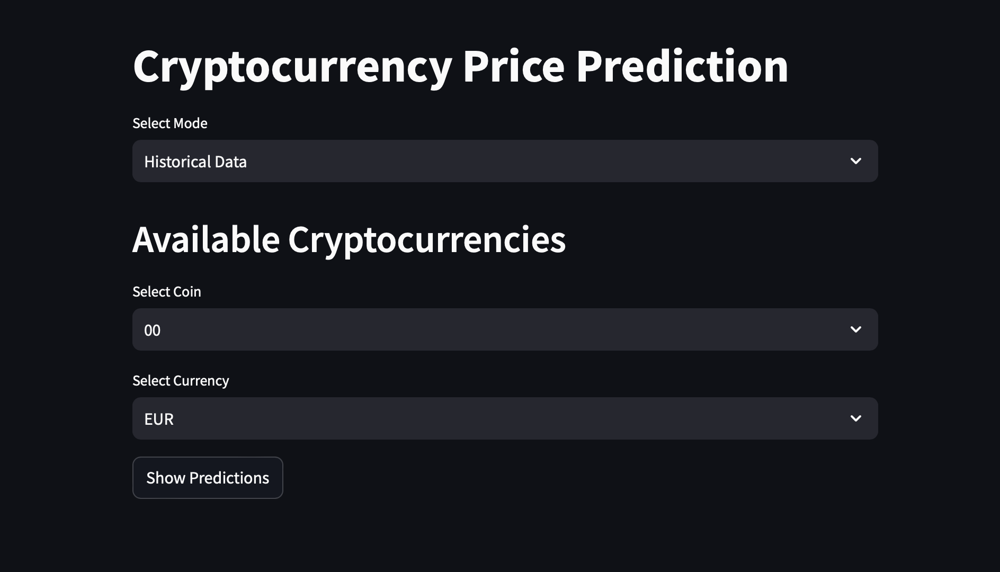
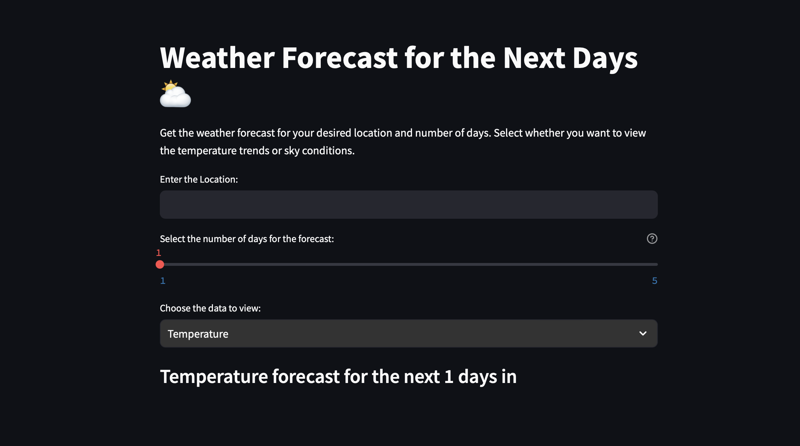

<section id="projects" class="projects-section">
  <h2>Projects</h2>

  <!-- Swiper -->
  <div class="swiper mySwiper">
    <div class="swiper-wrapper">

      <!-- Motion Detector slide -->
      <div class="swiper-slide"
           data-intro="Motion in Focus: Your Gateway to Surveillance. Motion Detector is powered by Flask and OpenCV and is designed to constantly watch your webcam for any motion it detects."
           data-highlights="Real-time alerts – receive an email snapshot after motion stops;Minimal setup – run the script, plug in your webcam, and configure your email credentials once;Lightweight and customizable – all image processing and mailing happens in separate threads"
           data-conclusion="Whether you are securing your front door or monitoring your workspace, Motion Detector provides professional-grade surveillance with just a few lines of Python."
           data-github="https://github.com/IAMMUNIBMIR/Motion-Detector"
           data-website="https://munibsmotiondetector.netlify.app/">
        
        <h3>Motion Detector</h3>
      </div>

      <!-- VibeVerse slide -->
      <div class="swiper-slide"
          data-intro="The VibeVerse app connects tracking your mood, interacting with friends and developing yourself all at once. The app was created by a six-person team in CMPUT 301 and its interface is simple and easy to use, thanks to object-oriented programming, a modular system and strong UI/UX design. I contributed to both the front-end and back-end, building core logic, interactive views, and modular data handling."
          data-highlights="35+ Java classes with clean OOP architecture and reusable components;Mood logging system with photo attachments, geolocation, and timestamping;RecyclerView adapters for dynamic rendering of moods, comments, and replies;Gamified progress tracking through custom levels, achievements, and rewards;Custom filtering & visual insights into emotion trends;Interactive social feed with notifications, replies, and profiles;Google Maps integration for location-based mood tracking;Media management through image utilities and storage-safe processing"
          data-conclusion="Created entirely in Java using Android Studio, VibeVerse reflects advanced Android development practices — from modular clean architecture to asynchronous UI rendering and scalable logic separation. The app offers asynchronous updates, allows for sharing feedback from peers, measures emotions and is fully personalized, while still following clean organization and Agile sprint delivery. Note: Due to licensing restrictions, this project is private. Demonstrations are available on request.">
        
        <h3>VibeVerse</h3>
      </div>

      <!-- Cryptocurrency Price Predictor slide -->
      <div class="swiper-slide"
           data-intro="Make confident crypto decisions by using our Crypto Price Predictor tool. A sophisticated, ML-powered forecasting tool developed in Python with Streamlit, LightGBM, and CoinGecko API. This application offers:"
           data-highlights="Real-time and historical data for 200+ top cryptocurrencies; Price predictions for the next 4 months using LightGBM regression models; Interactive line plots for historical prices and future forecasts; Seamless switch between historical view and prediction mode"
           data-conclusion="Users select their cryptocurrency, currency pair (e.g., USD, EUR), and preferred mode. The model is trained on recent market data and visually presents forecasts using Plotly in a sleek, dark-themed dashboard. While still improving in predictive accuracy, the tool provides valuable market insights and a strong foundation for future enhancement."
           data-github="https://github.com/IAMMUNIBMIR/Crypto-Prediction"
           data-website="https://app-crypto-3ztzbtrgcfqsnapufmsfbc.streamlit.app">
        
        <h3>Cryptocurrency Price Predictor</h3>
      </div>

      <!-- Weather Forecast App slide -->
      <div class="swiper-slide"
           data-intro="Stay informed and prepared with the Weather Forecast App, a user-friendly Python application built with Streamlit and powered by the OpenWeatherMap API. With real-time data fetching and dynamic visualization via Plotly, users can:"
           data-highlights="Enter any location; Choose the forecast duration (up to 5 days); Select between temperature trends or sky conditions"
           data-conclusion="The app allows you to see trends in temperature with a line chart and shows weather icons to reflect whether it’s sunny, cloudy, rainy or snowing. Using custom styling gives the UI a professional dark look. You can always see the current weather information on the app, whether you’re on the go or setting your week ahead."
           data-github="https://github.com/IAMMUNIBMIR/Weather-Forecast-app"
           data-website="https://iammunibmir-weather-forecast-app-main-zzt3wh.streamlit.app/">
        
        <h3>Weather Forecast App</h3>
      </div>

      <!-- Ray Tracer slide -->
      <div class="swiper-slide"
          data-intro="Ray Tracer is a low-level 3D rendering engine built in pure C, designed to manually simulate ray-sphere intersection, lighting, shadows, and anti-aliasing. It takes a custom text-based scene file and outputs a raw .ppm image — all without using any graphics libraries."
          data-highlights="Dynamic memory – manage geometry and buffers with malloc and free;File I/O – parse scene inputs and manually write .ppm images;Low-level math – implement dot, cross, normalize from scratch;Modular code – separate files for color, vector, and geometry;PPM output – clean raw images for easy post-processing"
          data-conclusion="All logic of this project is handcrafted in C using dynamic memory allocation, dealing with files manually and pointers to store data. Every feature from vector math to image generation is implemented without external libraries, showcasing strong fundamentals in systems programming and graphics pipeline construction."
          data-github="https://github.com/IAMMUNIBMIR/Ray-Tracer">
        
        <h3>Ray Tracer</h3>
      </div>

      <!-- MongoDB Tweet Manager slide -->
      <div class="swiper-slide"
           data-intro="Within seconds, MongoDB Tweet Manager can help your business process tweets and save important user information using its CLI."
           data-highlights="Scalable, schema-less architecture – leverage MongoDB’s high-throughput, distributed storage for limitless data ingestion;  
                            Advanced aggregation pipelines – aggregate, sort, and filter massive tweet datasets in milliseconds;  
                            Interactive, data-driven CLI – intuitive, modular commands for searching, listing, and composing tweets on-the-fly."
           data-conclusion="Whether you’re mining social sentiment, orchestrating large-scale hashtag campaigns, or building next-generation analytics pipelines, MongoDB Tweet Manager empowers you with unparalleled performance, extensibility, and data-driven insights—all through a sleek, command-line experience."
           data-github="https://github.com/IAMMUNIBMIR/TweetManager-MongoDB.git">
        
        <h3>MongoDB Tweet Manager</h3>
      </div>

    </div>

    <!-- arrows & dots -->
    <div class="swiper-button-prev"></div>
    <div class="swiper-button-next"></div>
    <div class="swiper-pagination"></div>
  </div>
</section>

<!-- ── Project Modal ── -->
<div id="project-modal" class="modal-overlay">
  <div class="modal-content">
    <span class="modal-close">&times;</span>
    <div class="modal-img">
      
    </div>
    <div class="modal-text">
      <h3 id="project-modal-title"></h3>
      <p id="project-modal-intro"></p>
      <ul id="project-modal-highlights"></ul>
      <p id="project-modal-conclusion"></p>
      <div class="modal-links">
        <a id="project-modal-github" href="#" target="_blank" rel="noopener">
          <i class="fab fa-github github-icon"></i>
        </a>
        <a id="project-modal-website" href="#" target="_blank" rel="noopener">
          <i class="fa-solid fa-arrow-up-right-from-square linkto-icon"></i>
        </a>
      </div>
    </div>
  </div>
</div>

<style>
  /* ── Projects section ── */
  .projects-section {
    width: 100%;
    padding: 6rem 0 4rem;
    background: #121212;
    color: #fff;
    text-align: center;
    font-family: Inter, sans-serif;
  }
  .projects-section h2 {
    margin-bottom: 5rem;
    font-size: 2rem;
  }

  /* ── Swiper container ── */
  .mySwiper {
    width: 100%;
    padding-bottom: 2rem;
    height: 60vh;
    position: relative;
  }
  .swiper-slide {
    width: 85%;
    height: 100%;
    display: flex;
    flex-direction: column;
    align-items: center;
    transition: transform .3s ease;
    cursor: pointer;
  }
  .swiper-slide-active {
    transform: scale(1.2);
    z-index: 2;
  }
  .mySwiper img {
    width: 70%;
    border-radius: 10px;
    object-fit: cover;
    display: block;
    margin: 0 auto .5rem;
  }
  .mySwiper h3 {
    margin: 0;
    font-size: 1.25rem;
    color: #fff;
  }
  .swiper-button-prev,
  .swiper-button-next {
    position: absolute;
    top: 35%;
    transform: translateY(-50%);
    color: #fff;
    z-index: 10;
  }
  .swiper-pagination-bullet {
    background: #555;
    opacity: .8;
  }
  .swiper-pagination-bullet-active {
    background: #1e90ff;
  }

  /* ── Overlay backdrop ── */
  .modal-overlay {
    display: none;
    position: fixed;
    inset: 0;
    background: rgba(0,0,0,0.6);
    backdrop-filter: blur(4px);
    align-items: center;
    justify-content: center;
    padding: 2rem;
    z-index: 200;
    opacity: 0;
    transition: opacity .3s ease;
  }
  .modal-overlay.active {
    display: flex;
    opacity: 1;
  }

  /* ── Modal box ── */
  .modal-content {
    background: #1e1e1e;
    border-radius: .5rem;
    width: 95vw;
    max-width: 900px;      
    max-height: 85vh;
    display: flex;
    overflow: hidden;
    position: relative;
    box-shadow: 0 8px 24px rgba(0,0,0,0.2);
    transform: translateY(-20px);
    transition: transform .3s ease, box-shadow .3s ease;
  }
  .modal-overlay.active .modal-content {
    transform: translateY(0);
  }

  /* ── Close button ── */
  .modal-close {
    position: absolute;
    top: .5rem;
    right: .75rem;
    font-size: 1.5rem;
    color: #888;
    cursor: pointer;
    z-index: 10;
    transition: color .2s ease;
  }
  .modal-close:hover {
    color: #fff;
  }

  /* ── Image pane ── */
  .modal-img {
    flex: 0 0 45%;         
    background: #222;
    display: flex;
    align-items: center;
    justify-content: center;
  }
  .modal-img img {
    max-width: 100%;
    max-height: 100%;
    object-fit: contain;
  }

  /* ── Text pane ── */
  .modal-text {
    flex: 1;
    padding: 1.25rem;
    color: #f0f0f0;
    overflow-y: auto;
  }
  .modal-text h3 {
    margin: 0 0 .5rem;
    font-size: 1.75rem;    
    color: #fafafa;
  }
  .modal-text p {
    margin: 0;
    line-height: 1.5;
    color: #ddd;
  }

  /* ── Highlights list ── */
  #project-modal-highlights {
    margin: 0.5rem 0 1rem;
    padding-left: 1.25rem;
  }
  #project-modal-highlights li {
    margin-bottom: 0.5rem;
  }

  /* ── GitHub + live-site links ── */
  .modal-links {
    margin-top: 1rem;
    display: flex;
    gap: 1rem;
  }
  .modal-links img,
  .modal-links i.github-icon,
  .modal-links i.linkto-icon {
    width: 24px;
    height: 24px;
    cursor: pointer;
    opacity: 0.75;
    transition: opacity 0.2s;
  }
  .modal-links img:hover {
    opacity: 1;
  }

  .github-icon {
      font-size: 2em; /* Increased icon size */
      color: #D9DDDC; /* Dark mode GitHub icon color */
      transition: color 0.3s, transform 0.3s; /* Added transition for color and size change */
    }

  .linkto-icon {
    font-size: 2rem;
    color: #D9DDDC;
    transition: color 0.3s, transform 0.3s; /* Added transition for color and size change */
    margin-left: 10px;
    }

    
  @media (max-width: 600px) {
    .modal-content { flex-direction: column; max-width: 90vw; }
    .modal-img { height: 200px; flex: none; }
    .modal-text { padding: 1rem; }
  }
</style>
